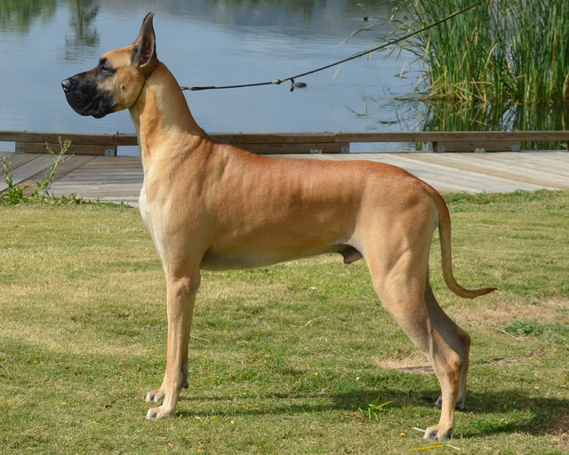

Samoyed
The well-bred Samoyed is an intelligent, gentle, and loyal dog. He is friendly and affectionate with his family, including the children, and thrives on being part of household activity.Siberian Husky
Siberians are high-energy and extremely athletic, and they can be expert escape artists.
Shiba Inu
Shibas are known for their spirited personality, small upright ears, and cat-like agility.Dachshund
The Dachshund is described as clever, lively, and courageous to the point of rashness.Border Collie
His personality is characteristically alert, energetic, hardworking, and smart.
Rottweiler
Rottweilers are calm, confident, and courageous. They don't make friends with people immediately.
German Shepherd
Marked by a willingness to learn and to have a purpose. They are excellent guard dogs and suitable for search missions.
Golden Retriever
The golden retriever is even-tempered, intelligent and affectionate. Golden retrievers are playful, yet gentle with children, and they tend to get along well with other pets and strangers.

Great Dane
The Great Dane is typically a gentle giant, easygoing and mild-mannered.
Welsh Corgi
They have quick intelligence and forceful will. They are active, animated dogs and do not ever want to be left out.Dobermann
They are loyal to their owners and are strong and attentive guard dogs.